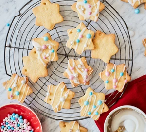

Christmas cookies

Description
These festive vanilla cookies make a beautiful edible Christmas
tree decoration. Or, you could pack them into boxes to give as
end-of-term gifts for teachers and friends.
Ingredients
- 140g icing sugar, sieved
- 1 tsp vanilla extract
- 1 egg yolk
- 250g butter, cut into small cubes
- 375g plain flour, sieved
To decorate
- 200g icing sugar, sieved
- edible food colouring, optional
- edible gold and silver balls
- approx 2m thin ribbon cut into 10 cm lengths
Steps
- Tip the icing sugar, vanilla extract, egg yolk
and butter into a mixing bowl, then stir together
with a wooden spoon (or pulse in a food processor
until well combined). Add the flour and mix to a
firm dough. Shape the dough into two flat discs
and wrap them. Chill for 20-30 mins. Heat oven to
190C/fan 170C/gas 5 and line two baking sheets
with non-stick baking paper.
- Roll out the dough on a lightly floured surface to
about the thickness of two £1 coins. Cut out
Christmassy shapes (use a cutter if you like) and
place on the baking sheets. Using the tip of a
skewer, cut a small hole in the top of each
cookie. Bake for 10-12 mins until lightly golden.
- Lift the biscuits onto a wire rack to cool.
Meanwhile, mix the icing sugar with a few drops
of cold water to make a thick, but still runny icing.
Colour with edible food colouring, if you like.
Spread it over the cooled biscuits, decorate with
edible balls and thread with ribbon when dry.